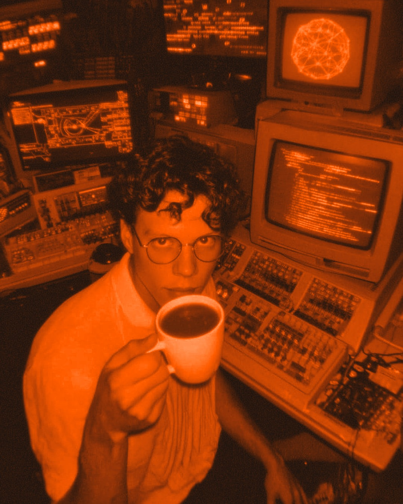

01/06
Claude Mods
¿Le darías las llaves de tu auto a una IA para que maneje sola?
Da miedo, ¿verdad?
Con las IA de hoy pasa algo parecido: si trabajan solas en tu negocio, pueden borrar archivos por error o gastar de más sin que lo notes.